# Data Acquisition: Energy Consumptionload_ntd_energy <-function(){library(readxl)library(httr2)library(tidyverse)library(fs)# Create 'data/mp02' directory if not already present DATA_DIR <- fs::path("data", "mp02") fs::dir_create(DATA_DIR, recurse=TRUE) NTD_ENERGY_FILE <- fs::path(DATA_DIR, "2025_ntd_energy.xlsx")if(!fs::file_exists(NTD_ENERGY_FILE)){library(httr2)request("https://www.transit.dot.gov/") |>req_url_path("sites","fta.dot.gov","files","2026-09","2025 Energy Consumption_260806.xlsx") |>req_headers(`User-Agent`="Mozilla/5.0 (Macintosh; Intel Mac OS X 10.15; rv:149.0) Gecko/20100101 Firefox/149.0") |>req_perform(NTD_ENERGY_FILE) }if(file.info(NTD_ENERGY_FILE)$size <1e4){cat("I was unable to download the NTD Energy File. Please try again.\n")stop("Download failed. Please delete the corrupted file by running `unlink('data/mp02/2025_ntd_energy.xlsx')` and try again.") } to_numeric_fill_0 <-function(x){ x <-if_else(x =="-", NA, x)replace_na(as.numeric(x), 0) }read_excel(NTD_ENERGY_FILE) |>select(-c(`Reporter Type`, `Reporting Module`, `Gallons of Other Fuel`, `Other Fuel Description`)) |>mutate(across(-c(`Agency Name`, `Mode`,`TOS`), to_numeric_fill_0)) |>group_by(`NTD ID`, `Mode`, `Agency Name`) |>summarize(across(where(is.numeric), sum), .groups ="keep") |>mutate(ENERGY =sum(c_across(c(where(is.numeric))))) |>filter(ENERGY >0) |>select(-ENERGY) |>ungroup()}NTD_ENERGY <-load_ntd_energy()
Warning: There was 1 warning in `mutate()`.
ℹ In argument: `across(-c(`Agency Name`, Mode, TOS), to_numeric_fill_0)`.
Caused by warning in `replace_na()`:
! NAs introduced by coercion
We received a warning when obtaining the second data set. The warning is saying that at least one of our values could not be converted into a number. The following code is to inspect it. We found the warning is regarding the mutate function that we are using. The column “Bio-Diesel Description” in our modified and raw data stood out the most being that the original values are strings, and the modified values are numerical with zeros. This column is the likely culprit. The other columns (with non numeric text values) were excluded during the data modification process, thus can not be the reason for the warning.
dplyr::last_dplyr_warnings()
[[1]]
<warning/rlang_warning>
Warning in `mutate()`:
ℹ In argument: `across(-c(`Agency Name`, Mode, TOS), to_numeric_fill_0)`.
Caused by warning in `replace_na()`:
! NAs introduced by coercion
---
Backtrace:
▆
1. └─global load_ntd_energy()
2. ├─dplyr::ungroup(...)
3. ├─dplyr::select(...)
4. ├─dplyr::filter(...)
5. ├─dplyr::mutate(...)
6. ├─dplyr::summarize(...)
7. ├─dplyr::group_by(...)
8. ├─dplyr::mutate(...)
9. └─dplyr:::mutate.data.frame(...)
$`NTD ID`
numeric(0)
$`Reporter Type`
[1] "Full Reporter" "Reduced Reporter"
$`Reporting Module`
[1] "Urban"
$`Gallons of Bio-Diesel`
numeric(0)
$`Bio-Diesel Description`
[1] "B5 fuel"
[2] "R5/R25"
[3] "B5"
[4] "Mostly B10, also some B5"
[5] "B10"
[6] "B20"
[7] "B100"
[8] "B2"
[9] "B0, 5%, 10% and 20%"
[10] "B5 - 5% biodiesel, 95% petroleum diesel"
[11] "95/5"
[12] "20%"
[13] "B11"
[14] "B20, B10, B5"
[15] "5%"
[16] "20% in summer and 5% in winter"
[17] "B5 & B20"
[18] "B-5"
[19] "b-11"
[20] "B5 and B100"
[21] "5% soy blended with 95% #2 diesel"
[22] "Metrolink uses 99 percent renewable fuel and 1 percent bio-diesel"
[23] "Other"
$`Gallons of Bunker Fuel`
logical(0)
$`Gallons of Compressed Natural Gas`
numeric(0)
$`Gallons of Diesel Fuel`
numeric(0)
$`Kilowatt hours of Electric Battery`
numeric(0)
$`Kilowatt hours of Electric Propulsion`
numeric(0)
$`Gallons of Ethanol`
numeric(0)
$`Gallons of Gasoline`
numeric(0)
$`Kilograms of Hydrogen`
numeric(0)
$`Gallons of Kerosene`
logical(0)
$`Gallons of Liquified Nat Gas`
numeric(0)
$`Gallons of Liquified Petroleum Gas`
numeric(0)
$`Gallons of Other Fuel`
numeric(0)
$`Other Fuel Description`
[1] "RenewableDiesel" "R99 Diesel" "R-99 Diesel" "R99"
[5] "Diesel" "RD99 Diesel"
# Data Acquisition: Transit Service Providedload_ntd_service <-function(){library(httr2)library(tidyverse)library(fs)# Create 'data/mp02' directory if not already present DATA_DIR <- fs::path("data", "mp02") fs::dir_create(DATA_DIR, recurse=TRUE) NTD_SERVICE_FILE <- fs::path(DATA_DIR, "2025_ntd_service.csv")if(!fs::file_exists(NTD_SERVICE_FILE)){library(httr2)request("https://data.transportation.gov/resource/4fir-qbim.csv") |>req_url_query(`$query`=paste("SELECT `_5_digit_ntd_id` AS `NTD_ID`", "`max_agency` AS `AGENCY`","`max_reporter_type` AS `reporter_type`","`max_organization_type` AS `organization_type`","`max_city` AS `city`","`max_state` AS `state`","`mode`","`type_of_service`","`max_primary_uza_code` as `uza_code`","`max_primary_uza_name` as `uza_name`","`max_primary_uza_area_sq_miles` as `uza_sq_miles`","`max_primary_uza_population` as `uza_population`","`max_service_area_sq_miles` as `service_area_sq_miles`","`max_service_area_population` as `service_area_population`","`questionable_record` as `flagged_likely_inaccurate`","`sum_unlinked_passenger_trips_upt` as `total_upt`","`sum_passenger_miles` WHERE caseless_one_of(`report_year`, '2025') limit 50000", sep=",")) |>req_headers(`User-Agent`="Mozilla/5.0 (Macintosh; Intel Mac OS X 10.15; rv:149.0) Gecko/20100101 Firefox/149.0") |>req_perform(NTD_SERVICE_FILE) }if(file.info(NTD_SERVICE_FILE)$size <1e4){cat("I was unable to download the NTD Service File. Please try again.\n")stop("Download failed. Please delete the corrupted file by running `unlink('data/mp02/2025_ntd_service.xlsx')` and try again.") }read_csv(NTD_SERVICE_FILE) |>mutate(flagged_likely_inaccurate =!is.na(flagged_likely_inaccurate))}NTD_SERVICE <-load_ntd_service()
Rows: 3762 Columns: 17
── Column specification ────────────────────────────────────────────────────────
Delimiter: ","
chr (11): NTD_ID, AGENCY, reporter_type, organization_type, city, state, mod...
dbl (6): uza_sq_miles, uza_population, service_area_sq_miles, service_area_...
ℹ Use `spec()` to retrieve the full column specification for this data.
ℹ Specify the column types or set `show_col_types = FALSE` to quiet this message.
# Inspection of data: The following code was done to inspect the data and get an idea of what type of values we will be working with.# "dim" was used to get an idea of how many rows and columns we are dealing with.# "glimpse" was used to see if the columns have the expected data types that we will need.# "summary" was used to show some basic statistics.# "skimr:skim was used to see how the data was distributed# "slice_sample(n=5)" was used to check for responsibility from a random sample of five data points dim(EIA_SEP_REPORT)
CO2_MWh primary_source electricity_price_MWh generation_MWh
Min. : 8.0 Length :50 Min. : 79.3 Min. : 2258891
1st Qu.: 592.8 N.unique : 6 1st Qu.:102.5 1st Qu.: 35875850
Median : 756.0 N.blank : 0 Median :113.9 Median : 63101866
Mean : 831.9 Min.nchar: 4 Mean :136.9 Mean : 86168942
3rd Qu.: 996.0 Max.nchar:13 3rd Qu.:140.1 3rd Qu.:102623389
Max. :1912.0 Max. :380.0 Max. :566502688
state abbreviation
Length :50 Length :50
N.unique :50 N.unique :50
N.blank : 0 N.blank : 0
Min.nchar: 4 Min.nchar: 2
Max.nchar:14 Max.nchar: 2
skimr::skim(EIA_SEP_REPORT)
Data summary
Name
EIA_SEP_REPORT
Number of rows
50
Number of columns
6
_______________________
Column type frequency:
character
3
numeric
3
________________________
Group variables
None
Variable type: character
skim_variable
n_missing
complete_rate
min
max
empty
n_unique
whitespace
primary_source
0
1
4
13
0
6
0
state
0
1
4
14
0
50
0
abbreviation
0
1
2
2
0
50
0
Variable type: numeric
skim_variable
n_missing
complete_rate
mean
sd
p0
p25
p50
p75
p100
hist
CO2_MWh
0
1
831.94
404.37
8.0
592.75
756.0
996.0
1912
▂▇▅▂▁
electricity_price_MWh
0
1
136.87
58.62
79.3
102.53
113.9
140.1
380
▇▁▁▁▁
generation_MWh
0
1
86168942.04
91741739.67
2258891.0
35875849.50
63101866.5
102623389.0
566502688
▇▂▁▁▁
EIA_SEP_REPORT |> dplyr::slice_sample(n =5)
CO2_MWh primary_source electricity_price_MWh generation_MWh state
1 680 Wind 112.1 57696155 Kansas
2 765 Natural gas 125.3 266119236 Florida
3 249 Hydroelectric 101.3 102397711 Washington
4 631 Natural gas 106.2 102698615 Virginia
5 407 Natural gas 270.4 214191383 California
abbreviation
1 KS
2 FL
3 WA
4 VA
5 CA
NTD ID Mode Agency Name Gallons of Bio-Diesel
Min. : 1 Length :1134 Length :1134 Min. : 0
1st Qu.:30055 N.unique : 17 N.unique : 520 1st Qu.: 0
Median :50014 N.blank : 0 N.blank : 0 Median : 0
Mean :48645 Min.nchar: 2 Min.nchar: 8 Mean : 27163
3rd Qu.:70010 Max.nchar: 2 Max.nchar: 74 3rd Qu.: 0
Max. :99425 Max. :9466431
Bio-Diesel Description Gallons of Bunker Fuel
Min. :0 Min. :0
1st Qu.:0 1st Qu.:0
Median :0 Median :0
Mean :0 Mean :0
3rd Qu.:0 3rd Qu.:0
Max. :0 Max. :0
Gallons of Compressed Natural Gas Gallons of Diesel Fuel
Min. : 0 Min. : 0
1st Qu.: 0 1st Qu.: 0
Median : 0 Median : 0
Mean : 175335 Mean : 386180
3rd Qu.: 0 3rd Qu.: 132513
Max. :30410141 Max. :26829691
Kilowatt hours of Electric Battery Kilowatt hours of Electric Propulsion
Min. : 0 Min. :0.000e+00
1st Qu.: 0 1st Qu.:0.000e+00
Median : 0 Median :0.000e+00
Mean : 98912 Mean :5.879e+06
3rd Qu.: 0 3rd Qu.:0.000e+00
Max. :7045274 Max. :1.677e+09
Gallons of Ethanol Gallons of Gasoline Kilograms of Hydrogen
Min. : 0.0 Min. : 0 Min. : 0.0
1st Qu.: 0.0 1st Qu.: 0 1st Qu.: 0.0
Median : 0.0 Median : 10032 Median : 0.0
Mean : 502.5 Mean : 88058 Mean : 502.5
3rd Qu.: 0.0 3rd Qu.: 68445 3rd Qu.: 0.0
Max. :225338.0 Max. :4270146 Max. :225338.0
Gallons of Kerosene Gallons of Liquified Nat Gas
Min. :0 Min. : 0
1st Qu.:0 1st Qu.: 0
Median :0 Median : 0
Mean :0 Mean : 197
3rd Qu.:0 3rd Qu.: 0
Max. :0 Max. :223362
Gallons of Liquified Petroleum Gas
Min. : 0
1st Qu.: 0
Median : 0
Mean : 8167
3rd Qu.: 0
Max. :1603884
skimr::skim(NTD_ENERGY)
Data summary
Name
NTD_ENERGY
Number of rows
1134
Number of columns
16
_______________________
Column type frequency:
character
2
numeric
14
________________________
Group variables
None
Variable type: character
skim_variable
n_missing
complete_rate
min
max
empty
n_unique
whitespace
Mode
0
1
2
2
0
17
0
Agency Name
0
1
8
74
0
520
0
Variable type: numeric
skim_variable
n_missing
complete_rate
mean
sd
p0
p25
p50
p75
p100
hist
NTD ID
0
1
48645.45
27733.33
1
30054.75
50013.5
70010.00
99425
▃▅▇▃▆
Gallons of Bio-Diesel
0
1
27163.32
358579.01
0
0.00
0.0
0.00
9466431
▇▁▁▁▁
Bio-Diesel Description
0
1
0.00
0.00
0
0.00
0.0
0.00
0
▁▁▇▁▁
Gallons of Bunker Fuel
0
1
0.00
0.00
0
0.00
0.0
0.00
0
▁▁▇▁▁
Gallons of Compressed Natural Gas
0
1
175335.32
1158352.07
0
0.00
0.0
0.00
30410141
▇▁▁▁▁
Gallons of Diesel Fuel
0
1
386179.80
1803711.93
0
0.00
0.0
132512.50
26829691
▇▁▁▁▁
Kilowatt hours of Electric Battery
0
1
98912.40
457655.54
0
0.00
0.0
0.00
7045274
▇▁▁▁▁
Kilowatt hours of Electric Propulsion
0
1
5878699.65
61927078.02
0
0.00
0.0
0.00
1676745570
▇▁▁▁▁
Gallons of Ethanol
0
1
502.53
8029.82
0
0.00
0.0
0.00
225338
▇▁▁▁▁
Gallons of Gasoline
0
1
88057.52
283781.22
0
0.00
10032.5
68445.25
4270146
▇▁▁▁▁
Kilograms of Hydrogen
0
1
502.53
8029.82
0
0.00
0.0
0.00
225338
▇▁▁▁▁
Gallons of Kerosene
0
1
0.00
0.00
0
0.00
0.0
0.00
0
▁▁▇▁▁
Gallons of Liquified Nat Gas
0
1
196.97
6632.89
0
0.00
0.0
0.00
223362
▇▁▁▁▁
Gallons of Liquified Petroleum Gas
0
1
8167.47
76500.42
0
0.00
0.0
0.00
1603884
▇▁▁▁▁
NTD_ENERGY |> dplyr::slice_sample(n =5)
# A tibble: 5 × 16
`NTD ID` Mode `Agency Name` Gallons of Bio-Diese…¹ Bio-Diesel Descripti…²
<dbl> <chr> <chr> <dbl> <dbl>
1 40158 MB Lake County Boar… 0 0
2 80008 MB City of Grand Fo… 5581 0
3 50058 DR Rockford Mass Tr… 0 0
4 10005 DR Lowell Regional … 0 0
5 50184 MB Macatawa Area Ex… 0 0
# ℹ abbreviated names: ¹`Gallons of Bio-Diesel`, ²`Bio-Diesel Description`
# ℹ 11 more variables: `Gallons of Bunker Fuel` <dbl>,
# `Gallons of Compressed Natural Gas` <dbl>, `Gallons of Diesel Fuel` <dbl>,
# `Kilowatt hours of Electric Battery` <dbl>,
# `Kilowatt hours of Electric Propulsion` <dbl>, `Gallons of Ethanol` <dbl>,
# `Gallons of Gasoline` <dbl>, `Kilograms of Hydrogen` <dbl>,
# `Gallons of Kerosene` <dbl>, `Gallons of Liquified Nat Gas` <dbl>, …
# A tibble: 5 × 17
NTD_ID AGENCY reporter_type organization_type city state mode
<chr> <chr> <chr> <chr> <chr> <chr> <chr>
1 99442 Calaveras Transit Ag… Rural Report… Independent Publ… San … CA DR
2 90017 City of Santa Rosa, … Full Reporter City, County or … Sant… CA MB
3 60270 City of McKinney, db… Full Reporter City, County or … Mcki… TX DR
4 40185 Bay County Transport… Full Reporter MPO, COG or Othe… Pana… FL MB
5 60089 City of Tyler, dba: … Reduced Repo… City, County or … Tyler TX DR
# ℹ 10 more variables: type_of_service <chr>, uza_code <chr>, uza_name <chr>,
# uza_sq_miles <dbl>, uza_population <dbl>, service_area_sq_miles <dbl>,
# service_area_population <dbl>, flagged_likely_inaccurate <lgl>,
# total_upt <dbl>, sum_passenger_miles <dbl>
Data Cleaning and Preparation
Task 2
Note that we did not modify the column name into tidy format for the following “NTD_ENERGY_Modified” dataset like we normally would do. We did this so we can easily read these columns later when we need to match them with the fuel names in the ETA website.
# First we need to find the distinct codes for the "mode" column that appears in our NTD_ENERGY and NTD_SERVICE datasets.NTD_ENERGY |> dplyr::distinct(Mode) |> dplyr::arrange(Mode)
# A tibble: 17 × 1
Mode
<chr>
1 AR
2 CB
3 CC
4 CR
5 DR
6 FB
7 HR
8 IP
9 LR
10 MB
11 MG
12 RB
13 SR
14 TB
15 TR
16 VP
17 YR
# A tibble: 17 × 1
mode
<chr>
1 AR
2 CB
3 CC
4 CR
5 DR
6 FB
7 HR
8 IP
9 LR
10 MB
11 MG
12 RB
13 SR
14 TB
15 TR
16 VP
17 YR
Now that we know what coding to modify under the “mode” column for both datasets, we will modify those values. Instead of altering the original modified datasets, we will create two new ones that will have those modified values, and will use those going forward. This will ensure that if anything goes wrong, we still have our original modified data and won’t have to re run any code regarding data acquisition or initial modification.
NTD_ENERGY_Modified <- NTD_ENERGY |>mutate(Mode =recode_values(Mode,"AR"~"Alaska Railroad","CB"~"Commuter Bus","CC"~"Cable Car","CR"~"Commuter Rail","DR"~"Demand Response","FB"~"Ferryboat","HR"~"Heavy Rail","IP"~"Inclined Plane","LR"~"Light Rail","MB"~"Bus","MG"~"Monorail and Automated Guideway modes","RB"~"Bus Rapid Transit","SR"~"Streetcar Rail","TB"~"Trolleybus","TR"~"Aerial Tramway","VP"~"Vanpool","YR"~"Hybrid Rail",default ="Unknown" ))NTD_SERVICE_Modified <- NTD_SERVICE |>mutate(mode =recode_values(mode,"AR"~"Alaska Railroad","CB"~"Commuter Bus","CC"~"Cable Car","CR"~"Commuter Rail","DR"~"Demand Response","FB"~"Ferryboat","HR"~"Heavy Rail","IP"~"Inclined Plane","LR"~"Light Rail","MB"~"Bus","MG"~"Monorail and Automated Guideway modes","RB"~"Bus Rapid Transit","SR"~"Streetcar Rail","TB"~"Trolleybus","TR"~"Aerial Tramway","VP"~"Vanpool","YR"~"Hybrid Rail",default ="Unknown" ))# Following code is to check if the re-coding worked NTD_ENERGY_Modified |> dplyr::distinct(Mode) |> dplyr::arrange(Mode)
# A tibble: 17 × 1
Mode
<chr>
1 Aerial Tramway
2 Alaska Railroad
3 Bus
4 Bus Rapid Transit
5 Cable Car
6 Commuter Bus
7 Commuter Rail
8 Demand Response
9 Ferryboat
10 Heavy Rail
11 Hybrid Rail
12 Inclined Plane
13 Light Rail
14 Monorail and Automated Guideway modes
15 Streetcar Rail
16 Trolleybus
17 Vanpool
# A tibble: 17 × 1
mode
<chr>
1 Aerial Tramway
2 Alaska Railroad
3 Bus
4 Bus Rapid Transit
5 Cable Car
6 Commuter Bus
7 Commuter Rail
8 Demand Response
9 Ferryboat
10 Heavy Rail
11 Hybrid Rail
12 Inclined Plane
13 Light Rail
14 Monorail and Automated Guideway modes
15 Streetcar Rail
16 Trolleybus
17 Vanpool
Data Integration and Initial Exploration
Task 3a 3b and 3c
Which 5 states have the most expensive retail electricity? (Graph answer)
# Sorts the data so we have our top five states.EIA_TOP_5_PRICES <- EIA_SEP_REPORT |>arrange(desc(electricity_price_MWh)) |>slice_head(n =5)EIA_TOP_5_PRICE_STATES <- EIA_TOP_5_PRICES |>pull(state)# Displays the data in a graph for us to view it easily.EIA_TOP_5_PRICES |>ggplot(aes(x =reorder(state, electricity_price_MWh),y = electricity_price_MWh)) +geom_col() +coord_flip() +labs(title ="To 5 States with the Most Expensive Retail Electricity",x ="State",y ="Electricity Price (Dollar per MWh)" ) +theme_minimal()
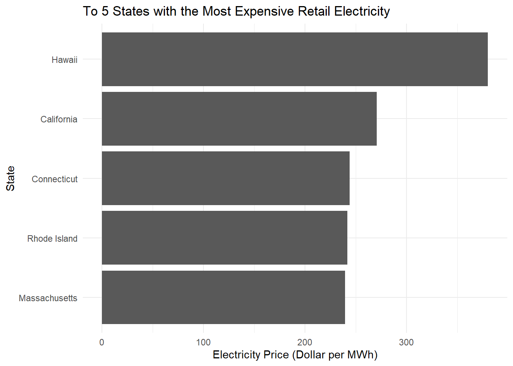
From the above graph we see that Hawaii is the leading state with the most expensive retail electricity, followed by California, Connecticut, Rhode Island, and Massachusetts. Taking a closer look, we see that the 4 states that follow are relatively close to each other regarding their electricity price, while Hawaii is much further out in the 300s range. This could be due to Hawaii having Petroleum as its primary energy source while the other states has Natural Gas.
Which 5 states have the ‘dirtiest’ electricity mix? (Table answer)
library(gt)# Sort the data so we have the top 5 dirtiest states.EIA_DIRTIEST_5 <- EIA_SEP_REPORT |>arrange(desc(CO2_MWh)) |>slice_head(n =5) |>select(state, primary_source, CO2_MWh)EIA_DIRTIEST_STATES <- EIA_DIRTIEST_5 |>pull(state)# Creates a table for us so we can view the ranking easierEIA_DIRTIEST_5 |>gt() |>cols_label(state ="State",primary_source ="Primary Electricity Source",CO2_MWh ="CO2 Emissions (Ibs per MWh)" ) |>tab_header(title ="Five States with the Dirtiest Electricity Mix",subtitle ="Ranked by pounds CO2 emitted per MWh" ) |>fmt_number(columns = CO2_MWh,decimals =1,use_seps =TRUE ) |>opt_row_striping() |>tab_options(row.striping.background_color ="#E8E8E8" )
Five States with the Dirtiest Electricity Mix
Ranked by pounds CO2 emitted per MWh
State
Primary Electricity Source
CO2 Emissions (Ibs per MWh)
West Virginia
Coal
1,912.0
Kentucky
Coal
1,744.0
Wyoming
Coal
1,724.0
Missouri
Coal
1,456.0
Hawaii
Petroleum
1,426.0
As can be seen from the table above, West Virginia is the most “dirtiest” state while Kentucky, Wyoming, Missouri, and Hawaii, follows behind. One interesting observation is that the majority of these states uses Coal as their primary electricity source. This could potentially be one of the factor to why they are producing relatively more CO2 emissions compared to other states.
On average, how many pounds of CO2 are emitted per MWh of electricity produced in the U.S.? (Note that we will need use a suitably weighted average here.) (Inline answer)
# Here we calculate the weighted average. # The weight is based on the total amount of electricity that each state generates.EIA_US_CO2_AVERAGE <- EIA_SEP_REPORT |>summarize(weighted_CO2_average =weighted.mean( CO2_MWh, generation_MWh ) )EIA_US_CO2_AVERAGE
weighted_CO2_average
1 784.8565
On average 784.8565127 pounds of CO2 is produced in the United States. This value can give us an idea of how “clean” or “dirty” other states are when compared to the average.
What are the three rarest primary energy sources in the US? What is the associated cost of electricity associated with each source and in what states are they used? (Table answer)
# The following code help us count how many times each energy source appears in the dataset.EIA_SOURCE_COUNTS <- EIA_SEP_REPORT |>count(primary_source, name ="number_of_states") |>arrange(number_of_states)EIA_SOURCE_COUNTS
# Here we are identifying the top 3 rarest sourcesEIA_RAREST_SOURCES <- EIA_SOURCE_COUNTS |>slice_min(number_of_states, n =3, with_ties =TRUE)EIA_RAREST_SOURCES
EIA_RAREST_SOURCE_NAMES <- EIA_RAREST_SOURCES |>pull(primary_source)# We next identify the states and electricity prices associated with our rare energy sources.EIA_RAREST_SOURCE_DETAILS <- EIA_SEP_REPORT |>inner_join(EIA_RAREST_SOURCES, by ="primary_source") |>select( primary_source, number_of_states, state, electricity_price_MWh ) |>arrange(number_of_states, primary_source, state)EIA_RAREST_SOURCE_DETAILS
# Finally we create the table to help us visualize the resultslibrary(gt)EIA_RAREST_SOURCE_DETAILS |>gt() |>cols_label(primary_source ="Primary Energy Source",number_of_states ="Number of States",state ="State",electricity_price_MWh ="Electricity Price ($ per MWh)" ) |>tab_header(title ="Three Rarest Primary Electricity Sources",subtitle ="Associated states and retail electricity prices" ) |>fmt_number(columns = electricity_price_MWh,decimals =2,use_seps =TRUE ) |>opt_row_striping() |>tab_options(row.striping.background_color ="#E8E8E8" )
Three Rarest Primary Electricity Sources
Associated states and retail electricity prices
Primary Energy Source
Number of States
State
Electricity Price ($ per MWh)
Petroleum
1
Hawaii
380.00
Hydroelectric
4
Idaho
95.10
Hydroelectric
4
Oregon
111.10
Hydroelectric
4
Vermont
184.10
Hydroelectric
4
Washington
101.30
Wind
4
Iowa
93.40
Wind
4
Kansas
112.10
Wind
4
New Mexico
91.80
Wind
4
South Dakota
108.70
From the table above we see that is the rarest energy source among the whole dataset is Petroleum with only one state using it. Meanwhile, the two other rarest sources Hydroelectric and Wind each have 4 states that uses it as a primary energy source. This table can be particularly valuable when we want to identify states that uses more of a “unique” energy source and how they compare to other states that uses something more common.
How many times cleaner is NY’s energy mix than that of Texas? (Inline answer)
# We first obtain the CO2 values for New York and TexasEIA_NY_TEXAS <- EIA_SEP_REPORT |>filter(state %in%c("New York", "Texas")) |>select(state, CO2_MWh)EIA_NY_TEXAS
state CO2_MWh
1 New York 537
2 Texas 823
# We now compare the two valuesEIA_NY_CLEANER <- EIA_NY_TEXAS |>summarize(times_cleaner = CO2_MWh[state =="Texas"] / CO2_MWh[state =="New York"] )EIA_NY_CLEANER
times_cleaner
1 1.532588
# For our Inline valueEIA_NY_CLEANER_ROUNDED <-round(EIA_NY_CLEANER$times_cleaner, 2)
Based on our above results, Texas produces 1.53 times as much CO2 (per MWh) as New York. In other words, New York is 1.53 times cleaner than Texas. It’s interesting to see this because both states uses Natural Gas as their primary energy source. This leads to questions of what aspects of NY or what practices are being done that makes this state cleaner.
What is the least commonly used fuel source for US public transit? (Inline answer)
# For each fuel source we want to count the number of public transit agencies using it.# We use pivot_longer() to transform our multiple columns of energy source into two columns. # One column with all the sources, and the other column with the amount of use reported.# Note we took out "Bio-Diesel Description" since that column is all 0's and is a descriptive column.# We made sure to exclude rows where the amounts are zeros, because a if an agency reported using 0 amount of the fuel then obviously we should not consider that as a "count". NTD_ENERGY_SOURCE_COUNTS <- NTD_ENERGY_Modified |>select(-c(Mode, `Bio-Diesel Description`)) |>pivot_longer(cols =-c(`NTD ID`, `Agency Name`),names_to ="energy_source",values_to ="amount" ) |>filter(amount >0) |>distinct(`NTD ID`, `Agency Name`, energy_source) |>count(energy_source, name ="agencies_using") |>arrange(agencies_using)# This displays our resultsNTD_ENERGY_SOURCE_COUNTS
# A tibble: 10 × 2
energy_source agencies_using
<chr> <int>
1 Gallons of Liquified Nat Gas 1
2 Gallons of Ethanol 16
3 Kilograms of Hydrogen 16
4 Gallons of Liquified Petroleum Gas 38
5 Gallons of Bio-Diesel 39
6 Kilowatt hours of Electric Propulsion 65
7 Gallons of Compressed Natural Gas 135
8 Kilowatt hours of Electric Battery 209
9 Gallons of Diesel Fuel 377
10 Gallons of Gasoline 432
# Gives us the least source usedNTD_LEAST_USED_SOURCE <- NTD_ENERGY_SOURCE_COUNTS |>slice_head(n =1) |>pull(energy_source)
From the results above we can see that we only have 10 columns. The other two columns were excluded because they have 0 amounts reported. As can be seen from the following output.
#The following set of codes was to inspect the missing columns to see why they were excluded.NTD_ZERO_SOURCE_COUNTS <- NTD_ENERGY_Modified |>summarize(`Gallons of Bunker Fuel`=sum(`Gallons of Bunker Fuel`),`Gallons of Kerosene`=sum(`Gallons of Kerosene`) ) |>pivot_longer(cols =everything(),names_to ="energy_source",values_to ="amount" )NTD_ZERO_SOURCE_COUNTS
# A tibble: 2 × 2
energy_source amount
<chr> <dbl>
1 Gallons of Bunker Fuel 0
2 Gallons of Kerosene 0
Based on both outputs if we were to consider fuels with no amounts reported, Gallons of Bunker Fuel and Gallons of Kerosene would be considered the least commonly used fuel source for U.S. public transit. If we are considering only reported amounts it would be Gallons of Liquified Nat Gas with only 1 agency reporting it’s usage. These results give us an idea of how certain rare or common some fuel sources regarding their usage.
Which five states has the fewest total miles traveled by public transit? (Graph answer)
# We first group by states and aggregate the passenger miles.# Next we arrange the states (lowest aggregate passenger miles to highest) and pick the first 5# Note: we are excluding the U.S. territories and Washington D.C. being that those are not statesNTD_STATE_MILES <- NTD_SERVICE_Modified |>filter(state %in% state.abb) |>mutate(state = state.name[match(state, state.abb)]) |>group_by(state) |>summarize(total_miles =sum(sum_passenger_miles, na.rm =TRUE),.groups ="drop" ) |>arrange(total_miles)NTD_FEWEST_STATES <- NTD_STATE_MILES |>slice_head(n =5) |>pull(state)NTD_STATE_MILES |>slice_head(n =5)|>mutate(total_miles = scales::comma(total_miles))
# A tibble: 5 × 2
state total_miles
<chr> <chr>
1 Wyoming 0
2 South Dakota 2,313,232
3 New Hampshire 4,962,927
4 North Dakota 5,459,645
5 Mississippi 8,386,292
# We now create a graph to help easily visualize the rankingNTD_STATE_MILES |>slice_head(n =5) |>ggplot(aes(x =reorder(state, -total_miles),y = total_miles )) +geom_col(fill ="steelblue", width =0.7) +coord_flip() +scale_x_discrete(labels =c(WY ="Wyoming",SD ="South Dakota",NH ="New Hampshire",ND ="North Dakota",MS ="Mississippi" )) +scale_y_continuous(labels = scales::comma,expand =expansion(mult =c(0, 0.08)) ) +labs(title ="Five States with the Fewest Public Transit Passenger Miles",subtitle ="Annual passenger miles reported in the 2025 NTD data",x =NULL,y ="Total Passenger Miles" ) +theme_minimal() +theme(plot.title =element_text(size =14, face ="bold"),plot.subtitle =element_text(size =10),axis.text =element_text(size =11),axis.title.x =element_text(size =11),panel.grid.major.y =element_blank() )
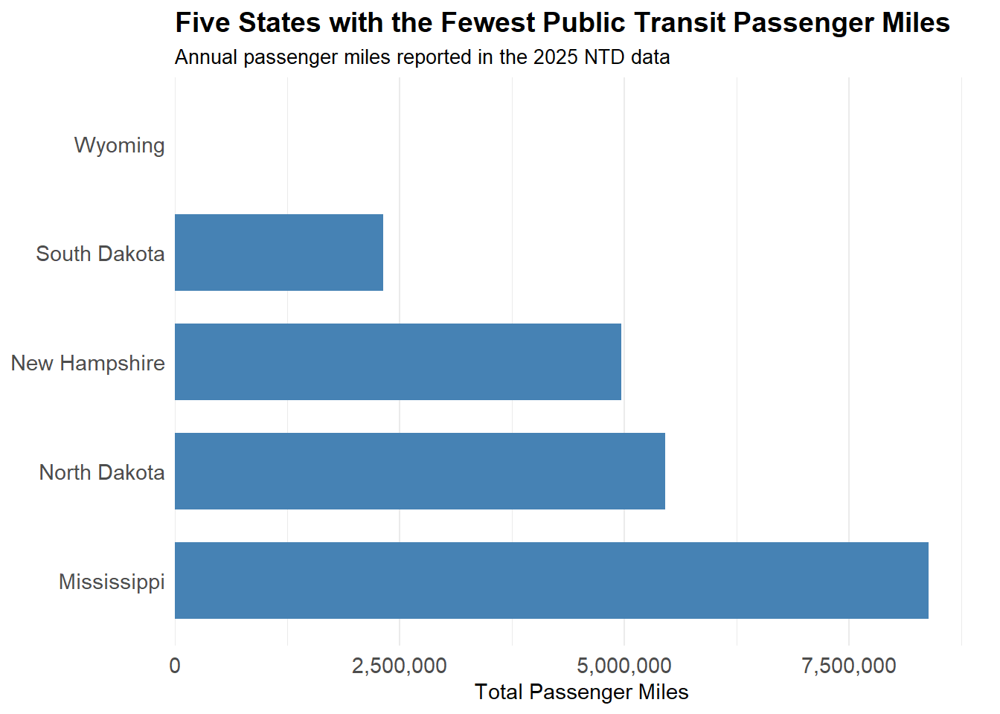
As can be seen from the above graph Wyoming have the fewest total miles traveled by public transit. South Dakota, New Hampshire, North Dakota, and Mississippi follows behind.
Regarding this specific dataset, certain rows were flagged as “inaccurate” by the Federal Transit Administration. Just to see what our results would look like if we were to filter out those rows, we re ran the same code excluding those rows. As can be seen below, We end up producing the same results. This strengthen our finding in that the flagged rows do not alter our results.
# A tibble: 5 × 2
state total_miles
<chr> <chr>
1 Wyoming 0
2 South Dakota 2,313,232
3 New Hampshire 4,962,927
4 North Dakota 5,459,645
5 Mississippi 8,386,292
NTD_STATE_MILES |>slice_head(n =5) |>ggplot(aes(x =reorder(state, -total_miles),y = total_miles )) +geom_col(fill ="steelblue", width =0.7) +coord_flip() +scale_y_continuous(labels = scales::comma,expand =expansion(mult =c(0, 0.08)) ) +labs(title ="Five States with the Fewest Public Transit Passenger Miles",subtitle ="Annual passenger miles reported in the 2025 NTD data (excluding flagged records)",x =NULL,y ="Total Passenger Miles" ) +theme_minimal() +theme(plot.title =element_text(size =14, face ="bold"),plot.subtitle =element_text(size =10),axis.text =element_text(size =11),axis.title.x =element_text(size =11),panel.grid.major.y =element_blank() )
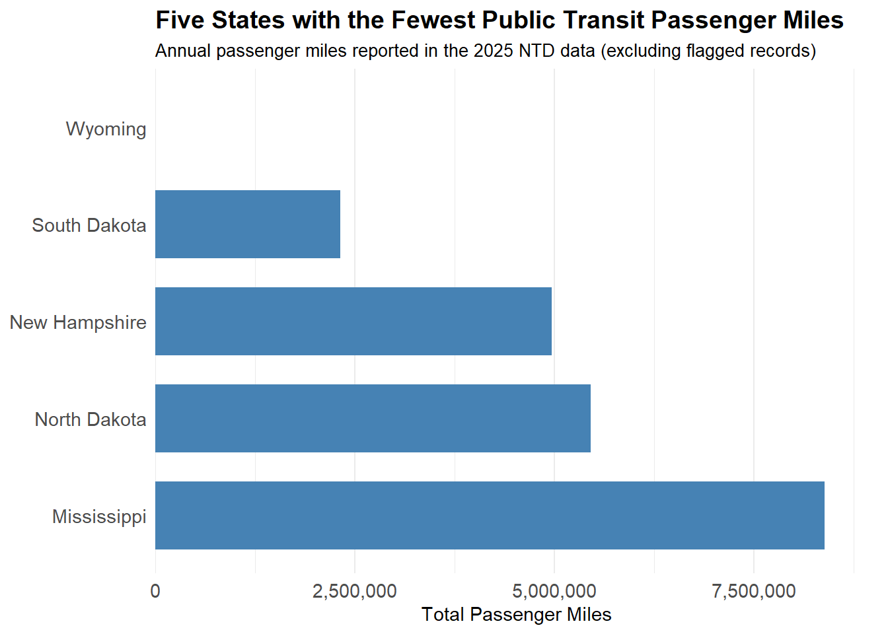
Are all states represented in this data (NTD_SERVICE_modified)? If no, which ones are missing? The state.name and state.abb objects built into R may be useful here, as well as the anti_join() function.(Inline answer)
# We first set up a dataset set with 50 states.NTD_ALL_STATES <-tibble(state = state.abb)NTD_ALL_STATES
# A tibble: 50 × 1
state
<chr>
1 AL
2 AK
3 AZ
4 AR
5 CA
6 CO
7 CT
8 DE
9 FL
10 GA
# ℹ 40 more rows
# The following code will help us identify the missing states (if any are missing) in our NTD_SERVICE_modified dataset.NTD_MISSING_STATES <- NTD_ALL_STATES |>anti_join( NTD_SERVICE_Modified |>distinct(state),by ="state" )NTD_MISSING_STATES
As can be seen from the output above there is 0 missing states in our NTD_SERVICE_modified dataset. This helps us more understand the data set in that we should be able to answer question regarding any states.
Data Integration
Task 4:
How many UPTs were recorded in states where the primary energy source was nuclear power?
# We first check how Nuclear power is labeled in the EIA_SEP_REPORT datasetEIA_SEP_REPORT |>distinct(primary_source)
# Now we identify the states that listed "Nuclear" as their primary energy sourcesEIA_NUCLEAR_STATES <- EIA_SEP_REPORT |>filter(primary_source =="Nuclear") |>select(state, abbreviation)EIA_NUCLEAR_STATES
state abbreviation
1 Illinois IL
2 Maryland MD
3 New Hampshire NH
4 South Carolina SC
5 Tennessee TN
# After identifying the states of interest we now join with the NTD_SERVICE_Modified datasetNTD_NUCLEAR_STATES <- NTD_SERVICE_Modified |>inner_join( EIA_NUCLEAR_STATES,by =c("state"="abbreviation") )NTD_NUCLEAR_STATES
# A tibble: 293 × 18
NTD_ID AGENCY reporter_type organization_type city state mode
<chr> <chr> <chr> <chr> <chr> <chr> <chr>
1 10002 Manchester Transit … Reduced Repo… Independent Publ… Manc… NH Dema…
2 10002 Manchester Transit … Reduced Repo… Independent Publ… Manc… NH Bus
3 10086 Cooperative Allianc… Full Reporter Independent Publ… Dover NH Dema…
4 10086 Cooperative Allianc… Full Reporter Independent Publ… Dover NH Bus
5 10087 City of Nashua, dba… Full Reporter City, County or … Nash… NH Dema…
6 10087 City of Nashua, dba… Full Reporter City, County or … Nash… NH Bus
7 10119 University Of New H… Reduced Repo… University Durh… NH Bus
8 10122 Jalbert Leasing, In… Reduced Repo… Private-For-Prof… Port… NH Comm…
9 10133 Boston Express Bus,… Reduced Repo… Private-For-Prof… Conc… NH Comm…
10 10159 VNA Home Healthcare… Rural Report… Private-Non-Prof… Keene NH Dema…
# ℹ 283 more rows
# ℹ 11 more variables: type_of_service <chr>, uza_code <chr>, uza_name <chr>,
# uza_sq_miles <dbl>, uza_population <dbl>, service_area_sq_miles <dbl>,
# service_area_population <dbl>, flagged_likely_inaccurate <lgl>,
# total_upt <dbl>, sum_passenger_miles <dbl>, state.y <chr>
# Finally, we calculate the total_upt across all the records that matches our conditionsNTD_NUCLEAR_UPT_TOTAL <- NTD_NUCLEAR_STATES |>summarize(total_upt = scales::comma(sum(total_upt, na.rm =TRUE)) )NTD_NUCLEAR_UPT_TOTAL
# A tibble: 1 × 1
total_upt
<chr>
1 561,675,933
From our final output the total number of UPT reported in states that uses nuclear power as their primary energy source is 561,675,933.
In what metro area were the most gallons of bio-diesel used by public transit agencies?
# We will first identify the relevant columns that are needed.names(NTD_ENERGY_Modified)
[1] "NTD ID"
[2] "Mode"
[3] "Agency Name"
[4] "Gallons of Bio-Diesel"
[5] "Bio-Diesel Description"
[6] "Gallons of Bunker Fuel"
[7] "Gallons of Compressed Natural Gas"
[8] "Gallons of Diesel Fuel"
[9] "Kilowatt hours of Electric Battery"
[10] "Kilowatt hours of Electric Propulsion"
[11] "Gallons of Ethanol"
[12] "Gallons of Gasoline"
[13] "Kilograms of Hydrogen"
[14] "Gallons of Kerosene"
[15] "Gallons of Liquified Nat Gas"
[16] "Gallons of Liquified Petroleum Gas"
# Here we inspect the agency IDs and modes column regarding our two dataset of interestNTD_ENERGY_Modified |>select(`NTD ID`, Mode) |>glimpse()
# From our prior code we see that the "NTD ID" column is formatted differently between the two data sets. # The following code changes the format of "NTD ID" column from our energy dataset to match the format of the "NTD ID" column from our service dataset.NTD_ENERGY_JOIN <- NTD_ENERGY_Modified |>mutate(`NTD ID`= stringr::str_pad(as.character(`NTD ID`),width =5,side ="left",pad ="0" ) )NTD_ENERGY_JOIN |>select(`NTD ID`, Mode) |>glimpse()
# Our next set of code checks if our service dataset has multiple records of the same agency and mode. # If it does we would have do something about it because duplicate combinations can lead us to over counting.NTD_SERVICE_Modified |>count(NTD_ID, mode) |>filter(n >1)
# We see that the combination of NTD ID and mode is not unique. This next code checks if the repeated combinations represents different service types of different metro areas.NTD_SERVICE_Modified |>distinct(NTD_ID, mode, uza_name) |>count(NTD_ID, mode) |>filter(n >1)
# A tibble: 0 × 3
# ℹ 3 variables: NTD_ID <chr>, mode <chr>, n <int>
# We also check if our Energy dataset has multiple records of the same agency and mode.NTD_ENERGY_JOIN |>count(`NTD ID`, Mode) |>filter(n >1)
# A tibble: 0 × 3
# ℹ 3 variables: NTD ID <chr>, Mode <chr>, n <int>
# Being that service data sets has repeated records of agency and mode combinations we want to only pull their distinct recordsNTD_SERVICE_UZA <- NTD_SERVICE_Modified |>distinct(NTD_ID, mode, uza_name)# We next join our datasets.NTD_BIODIESEL_JOIN <- NTD_ENERGY_JOIN |>inner_join( NTD_SERVICE_UZA,by =c("NTD ID"="NTD_ID", "Mode"="mode") ) # Now we inspect the results thus far.glimpse(NTD_BIODIESEL_JOIN)
# Finally we aggregate bio-diesel fuel amount by metro area and sort the record from highest to lowestNTD_BIODIESEL_BY_METRO <- NTD_BIODIESEL_JOIN |>group_by(uza_name) |>summarize(total_biodiesel =sum(`Gallons of Bio-Diesel`, na.rm =TRUE),.groups ="drop" ) |>arrange(desc(total_biodiesel))NTD_BIODIESEL_BY_METRO
# A tibble: 291 × 2
uza_name total_biodiesel
<chr> <dbl>
1 Los Angeles--Long Beach--Anaheim, CA 9466431
2 Minneapolis--St. Paul, MN 7130595
3 St. Louis, MO--IL 3929340
4 San Francisco--Oakland, CA 3882299
5 Seattle--Tacoma, WA 1350186
6 Dallas--Fort Worth--Arlington, TX 622029
7 Lancaster--Manheim, PA 621772
8 Champaign, IL 595836
9 Reno, NV--CA 483694
10 Las Vegas--Henderson--Paradise, NV 453041
# ℹ 281 more rows
# Creates a table with the top 5 areas that uses the most bio-diesel fuel.NTD_TOP_5_BIODIESEL <- NTD_BIODIESEL_BY_METRO |>slice_head(n =5) |>mutate(total_biodiesel = scales::comma(total_biodiesel))NTD_TOP_5_BIODIESEL_AREAS <- NTD_BIODIESEL_BY_METRO |>slice_head(n =5) |>pull(uza_name)NTD_TOP_5_BIODIESEL |> gt::gt() |> gt::cols_label(uza_name ="Metro Area",total_biodiesel ="Gallons of Bio-Diesel" ) |> gt::opt_row_striping() |> gt::tab_options(row.striping.background_color ="#D6D6D6" )
Metro Area
Gallons of Bio-Diesel
Los Angeles--Long Beach--Anaheim, CA
9,466,431
Minneapolis--St. Paul, MN
7,130,595
St. Louis, MO--IL
3,929,340
San Francisco--Oakland, CA
3,882,299
Seattle--Tacoma, WA
1,350,186
According to our above table, the metro area that uses the most gallons of bio-diesel used by public transit agencies is Los Angeles–Long Beach–Anaheim, CA.
Data Analysis
Task 5:
Calculate Total Emissions
Compute the total emissions associated with each Agency + Mode pair.
# We are checking if agency and mode combination is associated with one state.NTD_SERVICE_Modified |>distinct(NTD_ID, mode, state) |>count(NTD_ID, mode) |>filter(n >1)
# A tibble: 0 × 3
# ℹ 3 variables: NTD_ID <chr>, mode <chr>, n <int>
# Being that our prior output shows that the agency and mode combination is associated with one state, we can now create a look up table with unique agency, mode and state comboNTD_SERVICE_STATE <- NTD_SERVICE_Modified |>distinct(NTD_ID, mode, state)# We want to inspect that our NTD_SERVICE_STATE dataset looks reasonable before using it for join.glimpse(NTD_SERVICE_STATE)
# Now we join the recently created dataset with the NTD_ENERGY_JOIN dataset that we created from our prior section.# We are using the NTD_ENERGY_JOIN dataset because the formatting of the "NTD ID" column matches the formatting of our recently created a dataset.NTD_ENERGY_STATE <- NTD_ENERGY_JOIN |>inner_join( NTD_SERVICE_STATE,by =c("NTD ID"="NTD_ID", "Mode"="mode") )# We once again inspect our newly created datasetglimpse(NTD_ENERGY_STATE)
# Being that the resulting table from our recent join looks good thus far, we now join the EIA_SEP_REPORT dataset.NTD_EMISSIONS_JOIN <- NTD_ENERGY_STATE |>inner_join( EIA_SEP_REPORT |>select(abbreviation, CO2_MWh),by =c("state"="abbreviation") )# Checking if our recent join did not mess anything upglimpse(NTD_EMISSIONS_JOIN)
# From the recent glimpse function we notice that our row counts decreased by 11. # The following codes allows us to inspect the missing rows.NTD_ENERGY_STATE |>anti_join( EIA_SEP_REPORT |>select(abbreviation),by =c("state"="abbreviation") ) |>select(`NTD ID`, Mode, `Agency Name`, state) |>distinct()
# A tibble: 11 × 4
`NTD ID` Mode `Agency Name` state
<chr> <chr> <chr> <chr>
1 30030 Demand Response Washington Metropolitan Area Transit Authority DC
2 30030 Heavy Rail Washington Metropolitan Area Transit Authority DC
3 30030 Bus Washington Metropolitan Area Transit Authority DC
4 30112 Bus District Department of Transportation DC
5 30112 Streetcar Rail District Department of Transportation DC
6 40086 Demand Response Metropolitan Bus Authority PR
7 40086 Bus Metropolitan Bus Authority PR
8 40094 Demand Response Alternativa de Transporte Integrado PR
9 40094 Heavy Rail Alternativa de Transporte Integrado PR
10 40094 Bus Alternativa de Transporte Integrado PR
11 40175 Ferryboat Puerto Rico Maritime Transport Authority PR
# Our results show the rows excluded were associated with District of Columbia (DC) and Puerto Rico (PR). # Neither are considered states. Hence why they were dropped when joining with EIA_SEP_REPORT which only has 50 states.# Due to this finding we will change our from using inner_join() to left_join(), so that we don't drop any rows.NTD_EMISSIONS_JOIN <- NTD_ENERGY_STATE |>left_join( EIA_SEP_REPORT |>select(abbreviation, CO2_MWh),by =c("state"="abbreviation") )# Inspecting to check if left_join() did what we expect it to do.glimpse(NTD_EMISSIONS_JOIN)
So far we have created our join table. We still need to add a column that tells us how many Ibs of CO2 is produced per gallon of fuel consumption. We will use the EIA website to help us find a conversion factor that we can utilize.
Our challenge is that our fuel names in our NTD energy dataset doesn’t always match to the names on the EIA website. Therefore we are making some judgment calls in matching the names and providing proper justifications. Note the calculations that will be done later will mostly be approximation rather than direct conversion due to our column and the names in ETA site not exactly matching. We will note later which calculations are approximations and which are direct conversions.
Gallons of Diesel Fuel = Diesel / Distillate Fuel Oil
Reason: Both are referring to diesel fuel oil.
Gallons of Gasoline = Finished Motor Gasoline
Reason: Both are referring to gasoline.
Gallons of Kerosene = Kerosene
Reason: The names exactly match.
Gallons Liquefied Petroleum Gas = Propane
Reason: Propane is a specific type of Liquefied Petroleum Gas.
Gallons of Bio-Diesel = Diesel and Home Heating Fuel (Distillate Fuel Oil)
Reason: Diesel is the closest category that matches to what we have.
Gallons of Bunker Fuel = Residual Heating Fuel (Businesses only)
Reason: Its the closest thing listed to Bunker Fuel.
Gallons of Compressed Natural Gas = Natural Gas
Reason: Both are natural gas.
Gallons of Ethanol = Finished Motor Gasoline
Reason: Ethanol is usually found to be a component of motor gasoline.
Kilograms of Hydrogen = No associated names
Reason: EIA has no names that we can closely match with this column.
Gallons of Liquefied Nat Gas = Natural Gas
Reason: This source is just Natural Gas in liquid form.
Kilowatt hours of Electric Battery = Electricity
Reason: We are dealing with electric batteries.
Kilowatt hours of Electric Propulsion = Electricity
Reason: Electricity is being used to provide propulsion/movement.
In the following code, a new table is created with the converted values as a separate column. The factors being multiplied are the CO2 conversion factors pulled from the EIA website. In the code, the total emitted co2 that is being calculated for Bio-Diesel, Bunker fuel, Ethanol are approximation.
Some additional info to keep in mind:
Liquefied Petroleum Gas (LPG) uses the conversion factor for propane. Although propane is a type of LPG, Our LPG can contain other gases hence why we consider the total CO2 emission regarding this source as an approximation.
For Compressed Natural Gas (CNG) we are using an approximated factor. The factor in EIA website is in cubic feet while our column is measured in gallons. According to the FTA’s offical NTD Reporting Policy Manual, under Exhibit 65: Compressed Natural Gas Conversion Factors, 1 gallon equivalents of gasoline for CNG is 114,000 BTU. It is also worth noting that we are making the assumption that for every reported usage in our NTD dataset, it’s gasoline gallon equivalent and not diesel gallon equivalent. Our dataset does not specify which equivalent-gallon standard is being used.
According to EIA 1 cubic foot of natural gas = 1,036 BTU. Thus,
\[
\frac{81.5}{1{,}000} \times 120.85
= 9.849275\ \text{lbs of CO}_2.
\]
Hydrogen combustion produces water instead of emitting CO2. Thus our conversion factor is a zero.
For both the Electric Battery and Electric Propulsion, we divide their kilowatt hours by 1000 to get megawatt hours. This way we can multiply it with the “Co2_MwH column” in our EIA dataset to see the total CO2 being emitted.
The total CO2 emitted is being considered as an approximation due the CO2 per MWh being reported by each state. Thus in reality we are actually using states level emission factor (which is the average co2 being generated per MWh across a specific state) to calculate the total co2 being produced by different combinations of agencies and transportation modes.
# This part of our code uses the conversion factors to calculate the Co2 emissions.NTD_EMISSIONS_CALCULATED <- NTD_EMISSIONS_JOIN |>mutate(Combustion_Emissions = (`Gallons of Diesel Fuel`*22.45) + (`Gallons of Gasoline`*18.73) + (`Gallons of Kerosene`*21.78) + (`Gallons of Liquified Petroleum Gas`*12.68) + (`Gallons of Bio-Diesel`*22.45) + (`Gallons of Bunker Fuel`*24.78) + (`Gallons of Ethanol`*18.73) )CNG_CO2_FACTOR <-114000/1036/1000*120.85NTD_EMISSIONS_CALCULATED <- NTD_EMISSIONS_CALCULATED |>mutate(CNG_Emissions =`Gallons of Compressed Natural Gas`* CNG_CO2_FACTOR )LNG_CO2_FACTOR <-81.5/1000*120.85NTD_EMISSIONS_CALCULATED <- NTD_EMISSIONS_CALCULATED |>mutate(LNG_Emissions =`Gallons of Liquified Nat Gas`* LNG_CO2_FACTOR )HYDROGEN_CO2_FACTOR <-0NTD_EMISSIONS_CALCULATED <- NTD_EMISSIONS_CALCULATED |>mutate(Hydrogen_Emissions =`Kilograms of Hydrogen`* HYDROGEN_CO2_FACTOR )KWH_TO_MWH <-1000NTD_EMISSIONS_CALCULATED <- NTD_EMISSIONS_CALCULATED |>mutate(Battery_Emissions = (`Kilowatt hours of Electric Battery`/ KWH_TO_MWH) * CO2_MWh,Propulsion_Emissions = (`Kilowatt hours of Electric Propulsion`/ KWH_TO_MWH) * CO2_MWh )# We now calculate the total emissions for each agency/mode combination.NTD_EMISSIONS_CALCULATED <- NTD_EMISSIONS_CALCULATED |>mutate(Total_Emissions = Combustion_Emissions + CNG_Emissions + LNG_Emissions + Hydrogen_Emissions + Battery_Emissions + Propulsion_Emissions )# Finally we check our newly formed datasetglimpse(NTD_EMISSIONS_CALCULATED)
Design and implement metrics for the four GTA IV Green Transit Awards and determine winners.
Note: For Task 7, to design and implements metrics, this was implicitly done in the coding when determining the winners for each reward. The metrics will be explained in task 8 (the press release).
# The first set of code for this task will aggregate total emissions by agency.NTD_EMISSIONS_AGENCY <- NTD_EMISSIONS_CALCULATED |>group_by(`NTD ID`, `Agency Name`) |>summarise(Total_Emissions =if (any(is.na(Total_Emissions))) {NA_real_ } else {sum(Total_Emissions) },.groups ="drop" )# Inspecting the resultsglimpse(NTD_EMISSIONS_AGENCY)
# Here we are inspecting the passenger usage data before joining it with the above table. # We want to make sure we are not over counting the usageNTD_SERVICE_Modified |>select(NTD_ID, AGENCY, total_upt, sum_passenger_miles) |>distinct() |>glimpse()
# Here we are aggregating the total_upt and sum_passenger_miles by agency in our NTD service datasetNTD_SERVICE_USAGE <- NTD_SERVICE_Modified |>group_by(NTD_ID, AGENCY) |>summarise(total_upt =sum(total_upt, na.rm =TRUE),sum_passenger_miles =sum(sum_passenger_miles, na.rm =TRUE),.groups ="drop" )# Confirming that we have one row per agencyglimpse(NTD_SERVICE_USAGE)
# Now we join our two tablesNTD_EMISSIONS_USAGE <- NTD_EMISSIONS_AGENCY |>left_join( NTD_SERVICE_USAGE,by =c("NTD ID"="NTD_ID") )# Inspecting our newly created datasetglimpse(NTD_EMISSIONS_USAGE)
# Now we use the newly created dataset to calculate emissions per UPT and per passenger miles in a new column.NTD_EMISSIONS_NORMALIZED <- NTD_EMISSIONS_USAGE |>mutate(Emissions_Per_UPT = Total_Emissions / total_upt,Emissions_Per_Passenger_Mile = Total_Emissions / sum_passenger_miles )# Inspecting the resultsglimpse(NTD_EMISSIONS_NORMALIZED)
# Here we are looking at the agencies with the lowest emissions per UPT.NTD_EMISSIONS_NORMALIZED |>filter(!is.na(Emissions_Per_UPT)) |>arrange(Emissions_Per_UPT) |>select(`Agency Name`, total_upt, Total_Emissions, Emissions_Per_UPT)
# A tibble: 517 × 4
`Agency Name` total_upt Total_Emissions Emissions_Per_UPT
<chr> <dbl> <dbl> <dbl>
1 City of Seattle 2.29e6 131837. 0.0575
2 Anaheim Transportation Network 8.28e6 1629941. 0.197
3 City of Portland 4.11e6 1010910. 0.246
4 City of Milwaukee 4.95e5 156900. 0.317
5 Tri-County Metropolitan Transpor… 6.58e7 26290094. 0.400
6 MTA New York City Transit 3.01e9 1744221176. 0.579
7 McKinney Avenue Transit Authority 3.05e5 223117. 0.731
8 City and County of San Francisco 1.68e8 135485193. 0.805
9 Port Authority Trans-Hudson Corp… 6.43e7 53665339. 0.835
10 County of Kern 2.69e5 239563. 0.890
# ℹ 507 more rows
# Although we have all our agencies ranked, we still want to create reasonable categories based on size, so that smaller agencies can receive recognition as well.# We will first look at the relevant statistics to help us determine how we want to set up the categories based on size.summary(NTD_EMISSIONS_NORMALIZED$total_upt)
Min. 1st Qu. Median Mean 3rd Qu. Max.
8.169e+03 4.682e+05 1.284e+06 1.509e+07 4.108e+06 3.015e+09
# Based on our Summary Statistics we will create our categories based on the percentiles.NTD_EMISSIONS_NORMALIZED <- NTD_EMISSIONS_NORMALIZED |>mutate(Agency_Size =case_when( total_upt <quantile(total_upt, 0.25) ~"Small", total_upt <quantile(total_upt, 0.75) ~"Medium",TRUE~"Large" ) )# Here we are checking how many agencies fall into this categoryNTD_EMISSIONS_NORMALIZED |>count(Agency_Size)
# A tibble: 3 × 2
Agency_Size n
<chr> <int>
1 Large 131
2 Medium 260
3 Small 131
# Now we identify the greenest agency for each category by UPT.NTD_EMISSIONS_NORMALIZED |>filter(!is.na(Emissions_Per_UPT)) |>group_by(Agency_Size) |>arrange(Emissions_Per_UPT, .by_group =TRUE) |>slice_head(n =5) |>select(Agency_Size, `Agency Name`, total_upt, Emissions_Per_UPT)
# A tibble: 15 × 4
# Groups: Agency_Size [3]
Agency_Size `Agency Name` total_upt Emissions_Per_UPT
<chr> <chr> <dbl> <dbl>
1 Large Anaheim Transportation Network 8.28e6 0.197
2 Large City of Portland 4.11e6 0.246
3 Large Tri-County Metropolitan Transportati… 6.58e7 0.400
4 Large MTA New York City Transit 3.01e9 0.579
5 Large City and County of San Francisco 1.68e8 0.805
6 Medium City of Seattle 2.29e6 0.0575
7 Medium City of Milwaukee 4.95e5 0.317
8 Medium Chicago Water Taxi (Wendella) 5.38e5 0.943
9 Medium University of California, Davis 3.87e6 0.972
10 Medium University of Minnesota 2.40e6 1.05
11 Small McKinney Avenue Transit Authority 3.05e5 0.731
12 Small County of Kern 2.69e5 0.890
13 Small City of Fort Lauderdale 3.58e5 1.89
14 Small University of Montana 1.27e5 2.19
15 Small City of McKinney 8.59e4 2.96
# We also identify the greenest agency for each category by passenger miles NTD_EMISSIONS_NORMALIZED |>filter(!is.na(Emissions_Per_Passenger_Mile)) |>group_by(Agency_Size) |>arrange(Emissions_Per_Passenger_Mile, .by_group =TRUE) |>slice_head(n =5) |>select(Agency_Size, `Agency Name`, sum_passenger_miles, Emissions_Per_Passenger_Mile)
# A tibble: 15 × 4
# Groups: Agency_Size [3]
Agency_Size `Agency Name` sum_passenger_miles Emissions_Per_Passen…¹
<chr> <chr> <dbl> <dbl>
1 Large Tri-County Metropolit… 270786952 0.0971
2 Large Anaheim Transportatio… 11789535 0.138
3 Large Snohomish County Publ… 61754624 0.142
4 Large San Francisco Bay Are… 804179562 0.151
5 Large Port Authority Trans-… 298848234 0.180
6 Medium City of Seattle 2063469 0.0639
7 Medium California Vanpool Au… 99336553 0.139
8 Medium Metropolitan Transpor… 61803637 0.155
9 Medium San Diego Association… 47811777 0.162
10 Medium Hampton Jitney, Inc. 59566698 0.169
11 Small Pima Association of G… 1886157 0.138
12 Small Adirondack Transit Li… 31332336 0.146
13 Small Regional Planning Com… 2110926 0.162
14 Small Denver Regional Counc… 6819886 0.164
15 Small Stanislaus Council of… 12194070 0.168
# ℹ abbreviated name: ¹Emissions_Per_Passenger_Mile
# The following code is creating the graph to help us visualize the ranking of agencies by the their CO2 emissions per UPT.UPT_GRAPH_DATA <- NTD_EMISSIONS_NORMALIZED |>filter(!is.na(Emissions_Per_UPT)) |>group_by(Agency_Size) |>arrange(Emissions_Per_UPT, .by_group =TRUE) |>slice_head(n =5) |>ungroup() |>mutate(Agency_Label = tidytext::reorder_within(`Agency Name`,-Emissions_Per_UPT, Agency_Size ) )ggplot( UPT_GRAPH_DATA,aes(x = Emissions_Per_UPT,y = Agency_Label,fill = Agency_Size )) +geom_col(width =0.7) +facet_wrap(~Agency_Size, scales ="free_y", ncol =1) + tidytext::scale_y_reordered() +labs(title ="Greenest Transit Agencies\nby Emissions per UPT",x ="Pounds of CO2 per Unlinked Passenger Trip",y ="Transit Agency" ) +theme_minimal() +theme(legend.position ="none",axis.text.y =element_text(size =9),plot.title =element_text(size =12,face ="bold",hjust =0.5,lineheight =1.2 ),plot.margin =margin(t =25, r =15, b =15, l =15) )
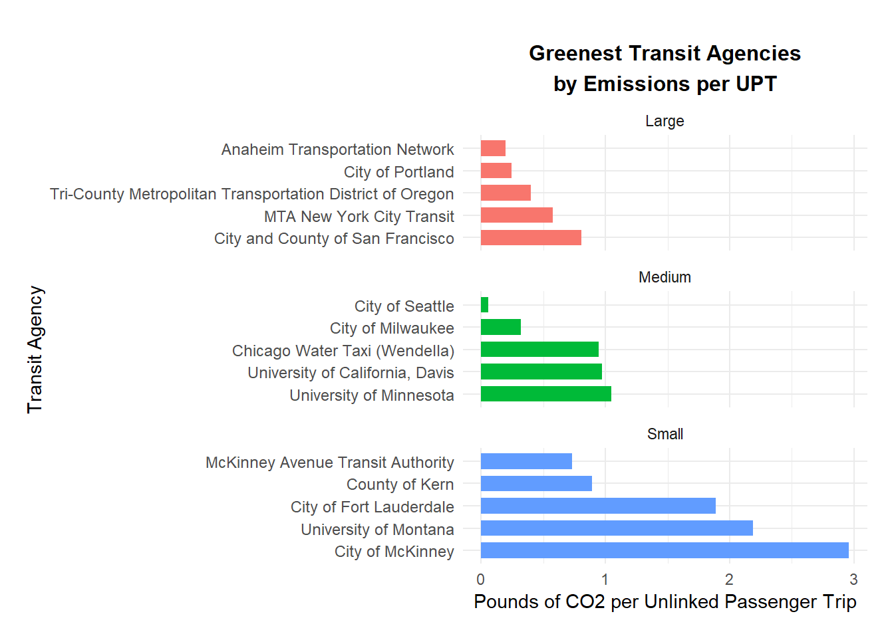
# The following code is creating the graph to help us visualize the ranking of agencies by the their CO2 emissions per passenger miles.MILE_GRAPH_DATA <- NTD_EMISSIONS_NORMALIZED |>filter(!is.na(Emissions_Per_Passenger_Mile)) |>group_by(Agency_Size) |>arrange(Emissions_Per_Passenger_Mile, .by_group =TRUE) |>slice_head(n =5) |>ungroup() |>mutate(Agency_Label = tidytext::reorder_within(`Agency Name`,-Emissions_Per_Passenger_Mile, Agency_Size ) )ggplot( MILE_GRAPH_DATA,aes(x = Emissions_Per_Passenger_Mile,y = Agency_Label,fill = Agency_Size )) +geom_col(width =0.7) +facet_wrap(~Agency_Size, scales ="free_y", ncol =1) + tidytext::scale_y_reordered() +labs(title ="Greenest Transit Agencies\nby Emissions per Passenger Mile",x ="Pounds of CO2 per Passenger Mile",y ="Transit Agency" ) +theme_minimal() +theme(legend.position ="none",axis.text.y =element_text(size =9),plot.title =element_text(size =12,face ="bold",hjust =0.5,lineheight =1.2 ),plot.margin =margin(t =25, r =15, b =15, l =15) )
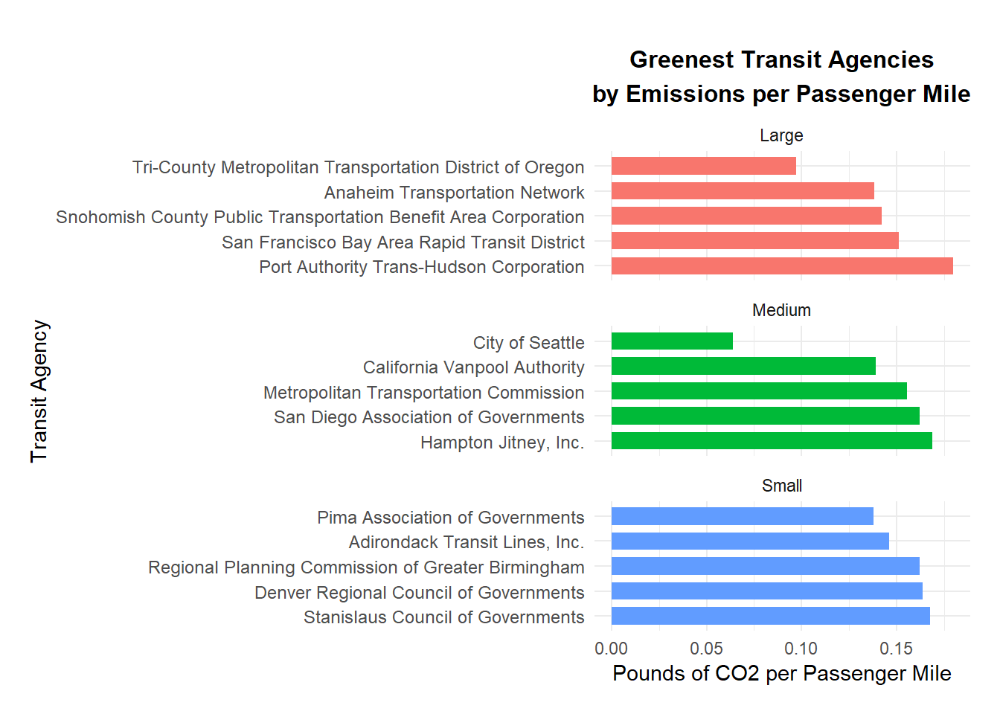
As mentioned in the code we categorized each agency by small medium and large. Regarding CO2 emissions per UPT, the most efficient agencies for each respective category are: “McKinney Avenue Transit Authority”, “City of Seattle”, and “Anaheim Transportation Network”.
Regarding CO2 emissions per passenger miles the most efficient agencies for small, medium and large categories are respectively: “Pima Association of Governments”, “City of Seattle”, and “Tri-County Metropolitan Transportation District of Oregon”.
Thus each agency mentioned receives the award for the “Greenest Transit Agency”.
# We will now look at the agencies with most co2 emitted using the same categories small medium and large.# Determining ranking by CO2 emitted per UPT.NTD_EMISSIONS_NORMALIZED |>filter(!is.na(Emissions_Per_UPT)) |>group_by(Agency_Size) |>arrange(desc(Emissions_Per_UPT), .by_group =TRUE) |>slice_head(n =5) |>select(Agency_Size, `Agency Name`, total_upt, Emissions_Per_UPT)
# A tibble: 15 × 4
# Groups: Agency_Size [3]
Agency_Size `Agency Name` total_upt Emissions_Per_UPT
<chr> <chr> <dbl> <dbl>
1 Large Southern California Regional Rail Au… 5669018 37.5
2 Large Washington State Ferries 19399898 17.8
3 Large Metropolitan Council 5050092 17.1
4 Large Northeast Illinois Regional Commuter… 38048502 16.6
5 Large Suffolk County 4303603 12.5
6 Medium SeaStreak, LLC 1414448 43.8
7 Medium Rio Metro Regional Transit District 737978 37.6
8 Medium Hyannis Harbor Tours, Inc. 964973 33.5
9 Medium Northern New England Passenger Rail … 552649 31.1
10 Medium San Francisco Bay Area Water Emergen… 2836526 30.7
11 Small Alaska Railroad Corporation 227348 96.7
12 Small Rhode Island Department of Transport… 36934 81.1
13 Small Town of Huntington 93865 31.3
14 Small Spartanburg Regional Health Services… 87468 29.5
15 Small Clermont County, Ohio 64712 28.6
# Determining ranking by CO2 emitted per Passenger miles. # Note: we found some agencies with records of zero passenger miles resulting in our calculations showing infinity. # We are excluding those agencies for this reward (part of the analysis).NTD_EMISSIONS_NORMALIZED |>filter(!is.na(Emissions_Per_Passenger_Mile), sum_passenger_miles >0 ) |>group_by(Agency_Size) |>arrange(desc(Emissions_Per_Passenger_Mile), .by_group =TRUE) |>slice_head(n =5) |>select(Agency_Size, `Agency Name`, sum_passenger_miles, Emissions_Per_Passenger_Mile)
# A tibble: 15 × 4
# Groups: Agency_Size [3]
Agency_Size `Agency Name` sum_passenger_miles Emissions_Per_Passen…¹
<chr> <chr> <dbl> <dbl>
1 Large Port Imperial Ferry C… 13911391 3.16
2 Large Washington State Ferr… 138984916 2.49
3 Large New York City Economi… 37638399 2.28
4 Large Metropolitan Council 39218550 2.21
5 Large Suffolk County 38481171 1.40
6 Medium Plaquemines Port, Har… 235927 23.5
7 Medium City of Montgomery 436241 15.2
8 Medium Gary Public Transport… 953649 3.16
9 Medium City of Glendale 1781059 2.91
10 Medium Erie Metropolitan Tra… 3510470 2.75
11 Small Loop Trolley Transpor… 15340 17.2
12 Small Borough of Pottstown 197825 7.26
13 Small City of Scottsdale 319260 6.81
14 Small Town of Huntington 479786 6.13
15 Small Wake County 763603 4.58
# ℹ abbreviated name: ¹Emissions_Per_Passenger_Mile
# Our next set of codes will create the graphs to help us visualize the rankings.# CO2 emitted per UPTUPT_WORST_GRAPH_DATA <- NTD_EMISSIONS_NORMALIZED |>filter(!is.na(Emissions_Per_UPT)) |>group_by(Agency_Size) |>arrange(desc(Emissions_Per_UPT), .by_group =TRUE) |>slice_head(n =5) |>ungroup() |>mutate(Agency_Label = tidytext::reorder_within(`Agency Name`, Emissions_Per_UPT, Agency_Size ) )ggplot( UPT_WORST_GRAPH_DATA,aes(x = Emissions_Per_UPT,y = Agency_Label,fill = Agency_Size )) +geom_col(width =0.7) +facet_wrap(~Agency_Size, scales ="free_y", ncol =1) + tidytext::scale_y_reordered() +labs(title ="Least Green Transit Agencies\nby Emissions per UPT",x ="Pounds of CO2 per Unlinked Passenger Trip",y ="Transit Agency" ) +theme_minimal() +theme(legend.position ="none",axis.text.y =element_text(size =9),plot.title =element_text(size =12,face ="bold",hjust =0.5,lineheight =1.2 ),plot.margin =margin(t =25, r =15, b =15, l =15) )
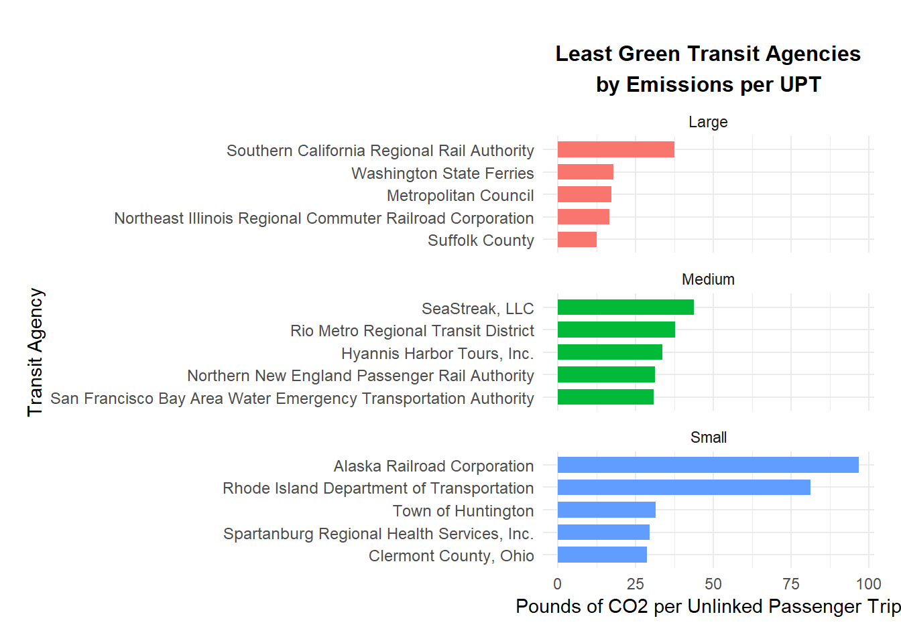
# CO2 emitted per passenger milesMILE_WORST_GRAPH_DATA <- NTD_EMISSIONS_NORMALIZED |>filter(!is.na(Emissions_Per_Passenger_Mile), sum_passenger_miles >0 ) |>group_by(Agency_Size) |>arrange(desc(Emissions_Per_Passenger_Mile), .by_group =TRUE) |>slice_head(n =5) |>ungroup() |>mutate(Agency_Label = tidytext::reorder_within(`Agency Name`, Emissions_Per_Passenger_Mile, Agency_Size ) )ggplot( MILE_WORST_GRAPH_DATA,aes(x = Emissions_Per_Passenger_Mile,y = Agency_Label,fill = Agency_Size )) +geom_col(width =0.7) +facet_wrap(~Agency_Size, scales ="free_y", ncol =1) + tidytext::scale_y_reordered() +labs(title ="Least Green Transit Agencies\nby Emissions per Passenger Mile",x ="Pounds of CO2 per Passenger Mile",y ="Transit Agency" ) +theme_minimal() +theme(legend.position ="none",axis.text.y =element_text(size =9),plot.title =element_text(size =12,face ="bold",hjust =0.5,lineheight =1.2 ),plot.margin =margin(t =25, r =15, b =15, l =15) )
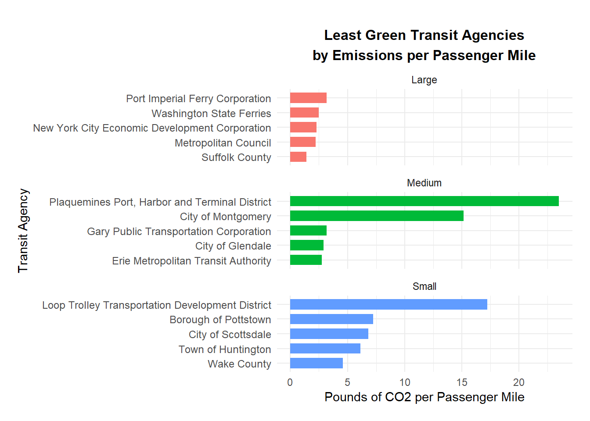
Regarding agencies with the most CO2 emitted per UPT, we have “Alaska Railroad Corporation”, “SeaStreak, LLC”, and “Southern California Regional Rail Authority” as top agencies in their respective small, medium and large categories.
Regarding agencies with the most CO2 emitted per passenger miles, we have “Loop Trolley Transportation Development District”, “Plaquemines Port, Harbor and Terminal District”, and “Port Imperial Ferry Corporation” as top agencies in their respective small, medium and large categories.
# Finally, we want to rank agencies based on the total electrical energy that they used. # We calculate total electricity usage across agenciesNTD_ELECTRIC_AGENCY <- NTD_EMISSIONS_CALCULATED |>group_by(`NTD ID`, `Agency Name`) |>summarise(Total_Electric_kWh =sum(`Kilowatt hours of Electric Battery`+`Kilowatt hours of Electric Propulsion`,na.rm =TRUE ),.groups ="drop" ) |>left_join( NTD_EMISSIONS_NORMALIZED |>select(`NTD ID`, Agency_Size),by ="NTD ID" )# Now we rank the agencies by their total electrical usageNTD_ELECTRIC_AGENCY |>filter(Total_Electric_kWh >0) |>group_by(Agency_Size) |>arrange(desc(Total_Electric_kWh), .by_group =TRUE) |>slice_head(n =5) |>select( Agency_Size,`Agency Name`, Total_Electric_kWh )
# A tibble: 15 × 3
# Groups: Agency_Size [3]
Agency_Size `Agency Name` Total_Electric_kWh
<chr> <chr> <dbl>
1 Large MTA New York City Transit 1679130097
2 Large Washington Metropolitan Area Transit Authority 655676437
3 Large MTA Long Island Rail Road 592049723
4 Large Metro-North Commuter Railroad Company, dba: M… 452387021
5 Large New Jersey Transit Corporation 419042061
6 Medium Northern Indiana Commuter Transportation Dist… 21776250
7 Medium Pennsylvania Department of Transportation 14440382
8 Medium Antelope Valley Transit Authority 9599794
9 Medium Connecticut Department of Transportation 5761882
10 Medium Detroit Transportation Corporation 2953662
11 Small McKinney Avenue Transit Authority 271102
12 Small Loop Trolley Transportation Development Distr… 181716
13 Small University of Montana 125609
14 Small Tulare County Regional Transit Agency 107157
15 Small City of Wilsonville 100841
# The following code creates the graph to help us visualize the rankings.ELECTRIC_GRAPH_DATA <- NTD_ELECTRIC_AGENCY |>filter(Total_Electric_kWh >0) |>group_by(Agency_Size) |>arrange(desc(Total_Electric_kWh), .by_group =TRUE) |>slice_head(n =5) |>ungroup() |>mutate(Agency_Label = tidytext::reorder_within(`Agency Name`, Total_Electric_kWh, Agency_Size ) )ggplot( ELECTRIC_GRAPH_DATA,aes(x = Total_Electric_kWh,y = Agency_Label,fill = Agency_Size )) +geom_col(width =0.6) +facet_wrap(~Agency_Size, scales ="free", ncol =1) + tidytext::scale_y_reordered() +scale_y_discrete(labels = \(x) gsub("___.*$", "", x),expand =expansion(add =0.8) ) +labs(title ="Most Electrified Transit Agencies",x ="Total Electricity Usage (Thousands of kWh)",y ="Transit Agency" ) +scale_x_continuous(labels = scales::label_number(scale =0.001,big.mark ="," ) ) +theme_minimal() +theme(legend.position ="none",axis.text.y =element_text(size =8),axis.text.x =element_text(size =8),plot.title =element_text(size =11,face ="bold",hjust =0.5,lineheight =1.2 ),plot.margin =margin(t =30, r =20, b =20, l =20) )
Scale for y is already present.
Adding another scale for y, which will replace the existing scale.
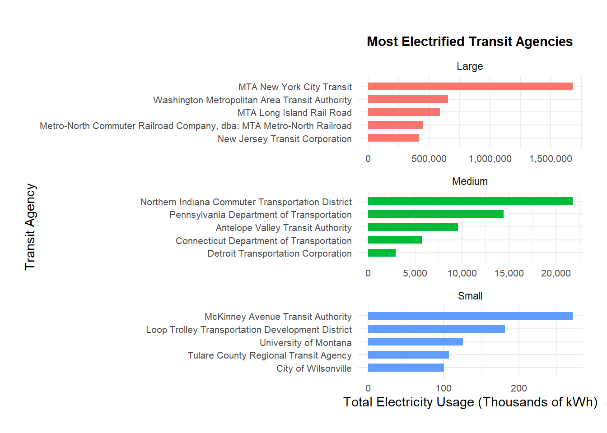
Based on our table above the agencies that used the most electricity across the small, medium and large categories are respectively: “McKinney Avenue Transit Authority”, “Northern Indiana Commuter Transportation District”, and “MTA New York City Transit”.
Task 8
Note: for task 6 and 7 we created graphs even though the task does not require us to. We will use the image of those graphs for our Press Release, thus fulfilling the graph requirement of task 8.
Additional Analysis and coding for task 8
# The following code retrieves the median value for each rewards and their categories.# Note that the median for the most and least efficient agency are the same.MEDIAN_REFERENCES <- NTD_EMISSIONS_NORMALIZED |>group_by(Agency_Size) |>summarise(Median_Emissions_Per_UPT =median( Emissions_Per_UPT,na.rm =TRUE ),Median_Emissions_Per_Passenger_Mile =median( Emissions_Per_Passenger_Mile[!is.na(Emissions_Per_Passenger_Mile) & sum_passenger_miles >0 ],na.rm =TRUE ),.groups ="drop" ) |>left_join( NTD_ELECTRIC_AGENCY |>group_by(Agency_Size) |>summarise(Median_Total_Electric_kWh =median( Total_Electric_kWh,na.rm =TRUE ),.groups ="drop" ),by ="Agency_Size" )MEDIAN_REFERENCES
# A tibble: 3 × 4
Agency_Size Median_Emissions_Per_UPT Median_Emissions_Per_Passenger_Mile
<chr> <dbl> <dbl>
1 Large 3.70 0.795
2 Medium 6.04 1.16
3 Small 11.5 1.68
# ℹ 1 more variable: Median_Total_Electric_kWh <dbl>
# The following code will save a png image of the graphs that we will use in our press release.UPT_GRAPH <-ggplot( UPT_GRAPH_DATA,aes(x = Emissions_Per_UPT,y = Agency_Label,fill = Agency_Size )) +geom_col(width =0.7) +facet_wrap(~Agency_Size, scales ="free_y", ncol =1) + tidytext::scale_y_reordered() +labs(title ="Greenest Transit Agencies\nby Emissions per UPT",x ="Pounds of CO2 per Unlinked Passenger Trip",y ="Transit Agency" ) +theme_minimal() +theme(legend.position ="none",axis.text.y =element_text(size =9),plot.title =element_text(size =12,face ="bold",hjust =0.5,lineheight =1.2 ),plot.margin =margin(t =25, r =15, b =15, l =15) )MILE_GRAPH <-ggplot( MILE_GRAPH_DATA,aes(x = Emissions_Per_Passenger_Mile,y = Agency_Label,fill = Agency_Size )) +geom_col(width =0.7) +facet_wrap(~Agency_Size, scales ="free_y", ncol =1) + tidytext::scale_y_reordered() +labs(title ="Greenest Transit Agencies\nby Emissions per Passenger Mile",x ="Pounds of CO2 per Passenger Mile",y ="Transit Agency" ) +theme_minimal() +theme(legend.position ="none",axis.text.y =element_text(size =9),plot.title =element_text(size =12,face ="bold",hjust =0.5,lineheight =1.2 ),plot.margin =margin(t =25, r =15, b =15, l =15) )UPT_WORST_GRAPH <-ggplot( UPT_WORST_GRAPH_DATA,aes(x = Emissions_Per_UPT,y = Agency_Label,fill = Agency_Size )) +geom_col(width =0.7) +facet_wrap(~Agency_Size, scales ="free_y", ncol =1) + tidytext::scale_y_reordered() +labs(title ="Least Green Transit Agencies\nby Emissions per UPT",x ="Pounds of CO2 per Unlinked Passenger Trip",y ="Transit Agency" ) +theme_minimal() +theme(legend.position ="none",axis.text.y =element_text(size =9),plot.title =element_text(size =12,face ="bold",hjust =0.5,lineheight =1.2 ),plot.margin =margin(t =25, r =15, b =15, l =15) )MILE_WORST_GRAPH <-ggplot( MILE_WORST_GRAPH_DATA,aes(x = Emissions_Per_Passenger_Mile,y = Agency_Label,fill = Agency_Size )) +geom_col(width =0.7) +facet_wrap(~Agency_Size, scales ="free_y", ncol =1) + tidytext::scale_y_reordered() +labs(title ="Least Green Transit Agencies\nby Emissions per Passenger Mile",x ="Pounds of CO2 per Passenger Mile",y ="Transit Agency" ) +theme_minimal() +theme(legend.position ="none",axis.text.y =element_text(size =9),plot.title =element_text(size =12,face ="bold",hjust =0.5,lineheight =1.2 ),plot.margin =margin(t =25, r =15, b =15, l =15) )ELECTRIC_GRAPH <-ggplot( ELECTRIC_GRAPH_DATA,aes(x = Total_Electric_kWh,y = Agency_Label,fill = Agency_Size )) +geom_col(width =0.6) +facet_wrap(~Agency_Size, scales ="free", ncol =1) + tidytext::scale_y_reordered() +scale_y_discrete(labels = \(x) gsub("___.*$", "", x),expand =expansion(add =0.8) ) +labs(title ="Most Electrified Transit Agencies",x ="Total Electricity Usage (Thousands of kWh)",y ="Transit Agency" ) +scale_x_continuous(labels = scales::label_number(scale =0.001,big.mark ="," ) ) +theme_minimal() +theme(legend.position ="none",axis.text.y =element_text(size =8),axis.text.x =element_text(size =8),plot.title =element_text(size =11,face ="bold",hjust =0.5,lineheight =1.2 ),plot.margin =margin(t =30, r =20, b =20, l =20) )
Scale for y is already present.
Adding another scale for y, which will replace the existing scale.
It is with great honor that I present the award for the : “Greenest Transit Agency” and “The Most Electrified Transit Agency”. As for every year we also like to jest and present the the “Do Better” award for the agency that was the least efficient in our mission to reduce carbon footprints.
In order for each agencies to have a fair chance each award will have three categories: small medium and large agencies. Finally, we want to recognize more agencies that is why this year we are splitting our “Greenest Transit Agency” and “Do Better” award based on two separate metrics: Un-linked Passenger Trips (UPT) and Passenger miles.
With out further ado the winners for each rewards are:
Award: Greenest Transit Agency (per UPT):
Winner for small agency: “McKinney Avenue Transit Authority”
Winner for medium agency: “City of Seattle”
Winner for Large agency: “Anaheim Transportation Network”
Looking at our graph we can see how each winner stands against their competitors. The “City of Portland” came in pretty close in tieing it up with “Anaheim Transportation Network”. However “Anaheim Transportation Network” won with only having 0.197 pounds of CO2 being emitted. “McKinney Avenue Transit Authority” and “City of Seattle” won with only 0.731 and 0.058 pounds being emitted respectively.
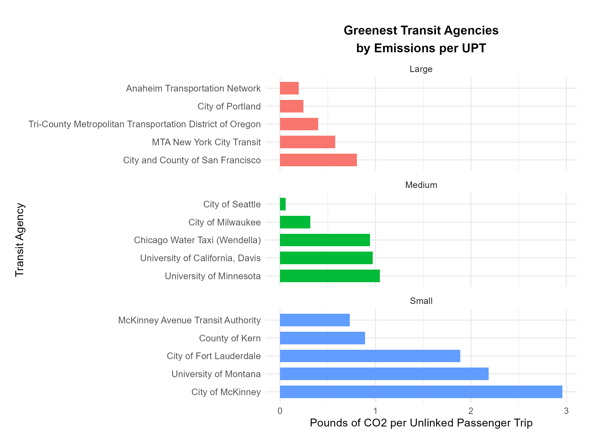
Greenest Transit Agencies by Emissions per UPT
For this award we determine the winner by who emitted the lowest amount of CO2 per UPT. Finally we like to recognize the magnitude of the agency commitment to being “Greener”. The median for each categories (small medium and large) are 11.488, 6.038, and 3.698 respectively. All three winners have produced less than a pound of CO2 per UPT.
We now recognize agencies based on a different metric: Per Passenger Mile.
Winner for small agency: “Pima Association of Governments”
Winner for medium agency: “City of Seattle”
Winner for Large agency: “Tri-County Metropolitan Transportation District of Oregon”
Below you can see how our winners stood among other top competitors “Pima Association of Governments”, “City of Seattle”, and “Tri-County Metropolitan Transportation District of Oregon” won with only having 0.138, 0.064, and 0.097 pounds of CO2 being emitted (per passenger mile) respectively.
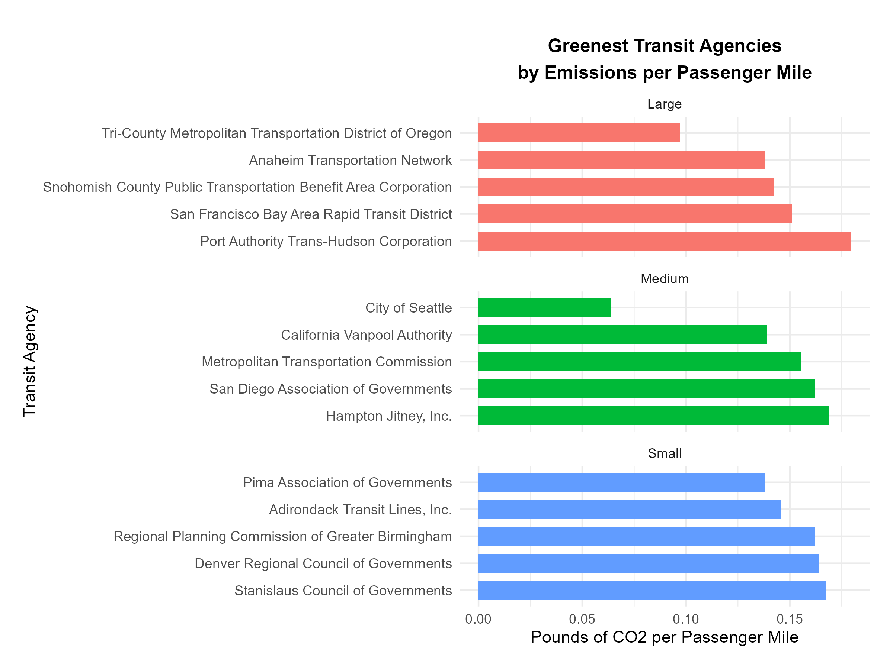
Greenest Transit Agencies by Emissions per Passenger Mile
Just like our prior award we determine the winner by ranking the agencies that emitted the lowest CO2. To present the magnitude of their accomplishments the median amount of CO2 emitted for each category (small, medium, large) are: 1.6831.158 and 0.795 respectively. We also like to recognize “City of Seattle” wining both rewards in their medium category.
Before we move on to what we believe is the most “excitingly-electrifying” reward we do have to call out the agencies who were the least efficient in our mission to reduce carbon footprint.
Award: Do Better (per UPT):
Winner for small agency: “Alaska Railroad Corporation”
Winner for medium agency: “SeaStreak, LLC”
Winner for Large agency: “Southern California Regional Rail Authority”
Below we can see how “bad” these agencies did among other top contenders. “Alaska Railroad Corporation”, “SeaStreak, LLC”, and “Southern California Regional Rail Authority” all did relatively “bad” by producing 96.747, 43.77, and 37.488 pounds of CO2 respectively.
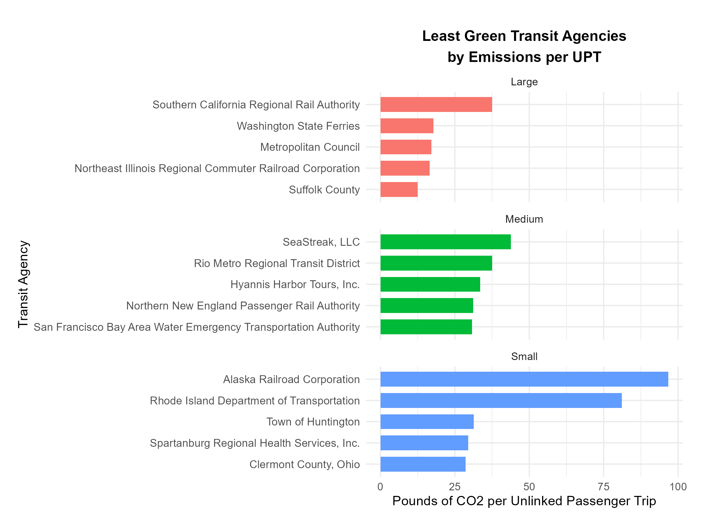
Least Green Transit Agencies by Emissions per UPT
The “winner” was determined by the agency that produced the most CO2 per UPT. To also present the magnitude of how least efficient they are, the median pounds of co2 emitted for each category(small, medium, and large) are 11.488, 6.038, and 3.698 respectively. All agencies produced way above the median.
Now moving on to the agencies when it comes to per passenger mile.
Award: Do Better (per Passenger Mile):
Winner for small agency: “Loop Trolley Transportation Development District”
Winner for medium agency: “Plaquemines Port, Harbor and Terminal District”
Winner for Large agency: “Port Imperial Ferry Corporation”
Below is a visual of how our agencies did relatively. “Loop Trolley Transportation Development District”, “Plaquemines Port, Harbor and Terminal District”, and “Port Imperial Ferry Corporation” produced 17.248, 23.497, and 3.156 pounds of CO2 per passenger mile respectively.
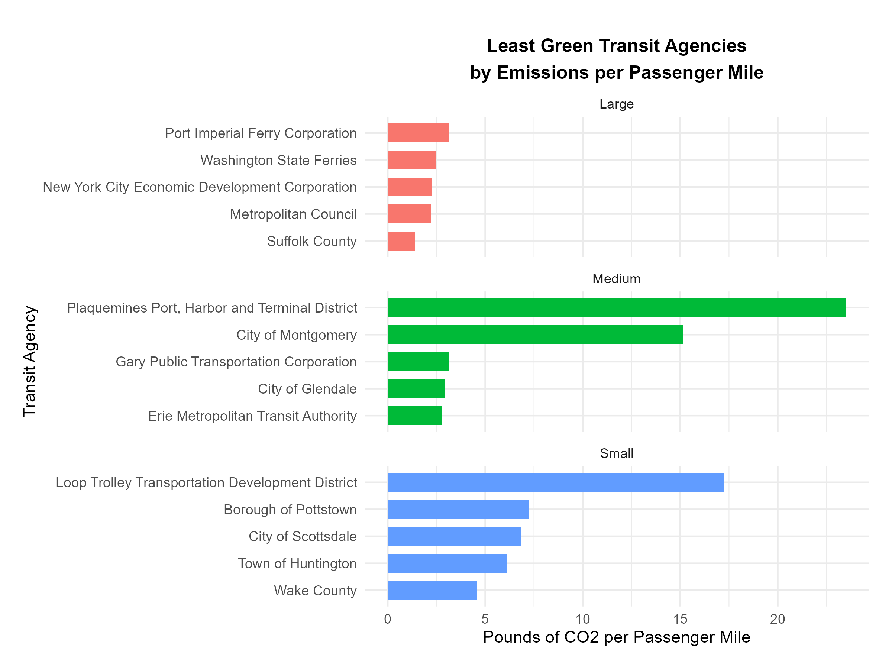
Least Green Transit Agencies by Emissions per Passenger Mile
Once again the “winner” is determined by the agency that produced the most CO2 (this time per passenger mile). Finally just to show the magnitude of their performance the the median pounds of CO2 emitted for each category (small, medium, and large) are 1.683, 1.158, and 0.795 respectively. All agencies produced above the median.
For the winners of our recent two awards as a jest we like to say, “Do Better”.
Finally we will list the winners for our last reward “The Most Electrified Transit Agency”
Award: The Most Electrified Transit Agency:
Winner for small agency: “McKinney Avenue Transit Authority”
Winner for medium agency: “Northern Indiana Commuter Transportation District”
Winner for Large agency: “MTA New York City Transit”
Below is our chart showing how each winner fared. “McKinney Avenue Transit Authority”, “Northern Indiana Commuter Transportation District”, and “MTA New York City Transit”, produced 271,102 kWh (kilowatt-hour), 21,776,250 kWh, and 1,679,130,097 kWh.
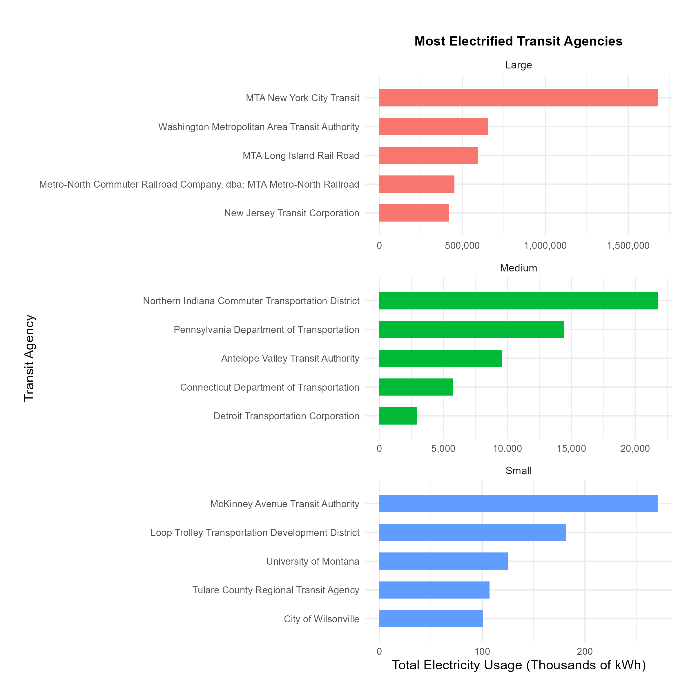
All our winners out paced their contenders. We identified our winners by how much total electricity they used. This award shows which agencies are truly contributing to the shift of using electricity as an energy sources in the transit system. Thus moving towards an environmentally friendly alternative.
Also just to show the magnitude of their standing the median kWh for each category (small median and large) are: 0, 0, and 538,838 kWh.
The median 0 value in our small and medium category shows that most of the agencies report no electricity usage. Therefore a huge praise goes to the winners of those two categories.
Some limitation we liked to disclose is that some of our fuel emission factors were approximations. We also had missing records regarding electrical emissions for DC and Puerto Rico.
All in all these are the winners for the 2026 GTA awards. We like to thank every agencies for doing their best in reducing their carbon footprint. Finally we like to acknowledge our data sources in helping us determine the winners. A big thank you to the Federal Transit Administration (FTA) for releasing their National Transit Database (NTD). We used it to analyze fuel/ energy usage and service data. Also a big thank you to the US. Energy Information Administration (EIA) for releasing their state electricity Profiles. This helped us determine the winners for our final award. Finally we are grateful for the the Greenhouse Gas Emission Factors and Technical Support Documentation released by the U.S. Environmental Protection Agency (EPA). This helped us convert some of our metrics. We hope to see more improvements in the coming years with our transit agencies.
NoteAI Usage Statement
AI was used to write the code in this project (including text found inside tables and graphs), but all non-code text was generated without the use of any Generative AI tools. Additionally, AI was used to provide additional background information, help understand the code it was creating, help understand the outputs the code was generating, help in debugging and brainstorming ideas.